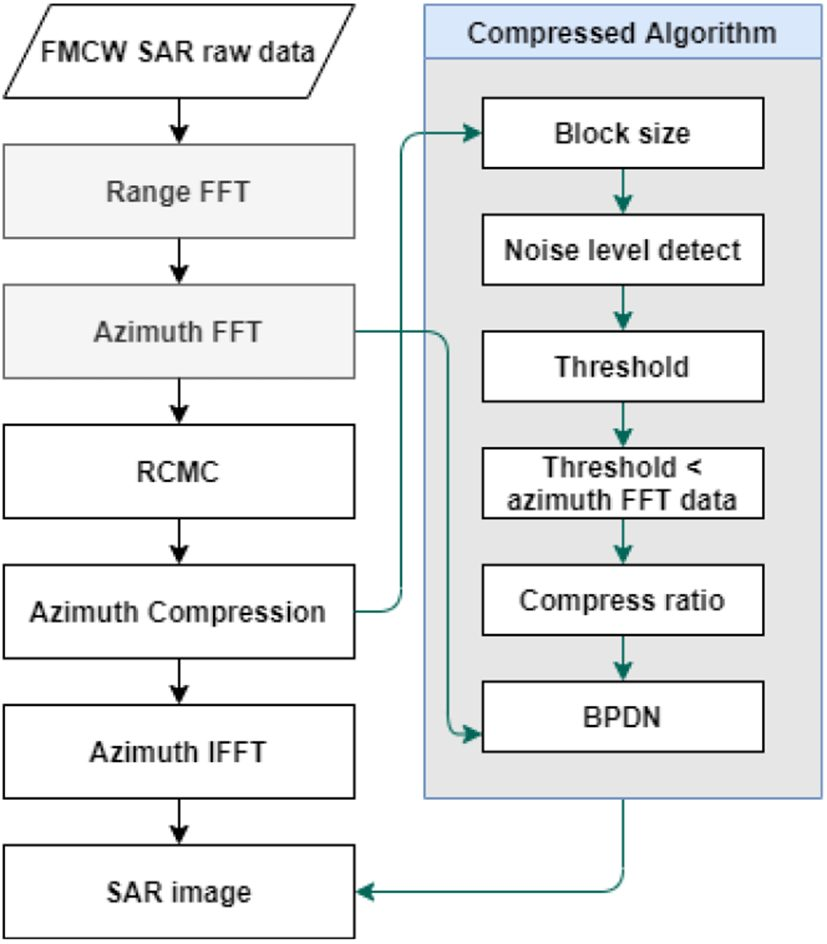

연구 과제
국방특화연구실 "차세대 SAR 연구 - 1단계" (연구실장)

개요
2019년 방위사업청·국방과학연구소의 국방특화연구실 사업으로 출범한 '차세대 SAR 연구' 특화연구실의 1단계로, 한국항공대 SATECS 연구실이 연구실장을 맡았다. 특화연구실은 ① 바이스태틱/멀티스태틱 SAR, ② 압축센싱 SAR, ③ Video SAR의 3개 세부 첨단 과제를 수행하며, 복수의 위성·항공기·드론에 장착된 SAR 탑재체를 유기적으로 운용하고 다양한 전장 환경에 필요한 초고해상도·실시간 SAR 체계와 미래 지능형 정찰 기능을 개발하는 것을 목표로 한다. 이우경 교수는 2020년 11월 한국전자파학회 '전자파기술'지에 특화연구실 소개 기사를 발표하였고, 같은 해 국방기술진흥연구소 웹진에 한국항공대의 X/C-대역 400 MHz 대역폭 드론 SAR 실험 플랫폼과 지뢰·은폐물 탐지 등 드론 SAR의 군사적 활용을 소개하였다. 1단계 시기의 대표 성과로는 출력이 제한된 드론 SAR에서 적응형 가변 서브블록 압축센싱으로 초목·지하 은폐 저피탐 표적의 탐지 성능을 높인 연구(2021, 특화실 사사 명시)와 드론 Video SAR 플랫폼용 압축센싱 기반 단일 안테나 GMTI 연구(2021)가 있다.
주요 내용·성과
- 특화연구실 3개 세부 연구 주제(바이스태틱/멀티스태틱 SAR, 압축센싱 SAR, Video SAR) 및 실시간 광역 감시 목표 — 연구실 공식 페이지
- 적응형 압축센싱 기반 드론 SAR 저피탐 은폐 표적 탐지: 가변 서브블록별 차등 압축으로 탐지 성능 향상·연산량 절감 (천형일·조휘정·반인모·이우경, 한국전자파학회논문지 32(11):990–1001, 2021.11, 사사 '차세대 SAR 특화실' 명시)
- 특화연구실 소개 기사: 이우경, "차세대 SAR 국방특화연구실 소개", 전자파기술 31(6), pp. 25–32, 2020.11
- 드론 SAR 활용 기고: 이우경, "드론 SAR 시스템, 감시정찰·탐지기술의 혁신을 가져온다", 국방기술진흥연구소 웹진 2020.07 (한국항공대 X/C-대역 400 MHz 드론 SAR 플랫폼 운용 소개)
관련 논문·발표
출처
- 구 연구실 홈페이지 / services/차세대-sar-국방-특화실
- 구 연구실 홈페이지 / 연구실-소개
- dbpia.co.kr / journal/articleDetail
- jkiees.org / archive/view_article
- dbpia.co.kr / journal/articleDetail
- dbpia.co.kr / journal/articleDetail
- jkiees.org / archive/view_article
- jkiees.org / archive/view_article
- kidet.or.kr / webzine/2007/09.php
- 2024winter.kiees.or.kr / html
- ntis.go.kr / ThSearchProjectList.do